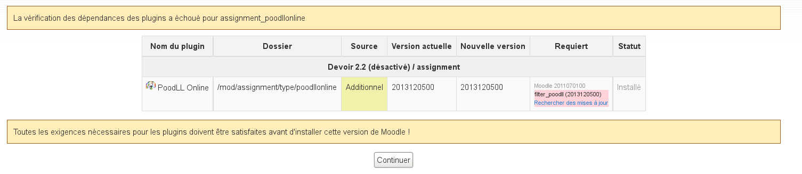

Moodle
Sommaire
sous OpenBSD 4.5
Paquets
lynx http://download.moodle.org/stable19/ pkg_add ftp://ftp.irisa.fr/pub/OpenBSD/$(uname -r)/packages/$(uname -m)/php5-core ln -s /var/www/conf/modules.sample/php5.conf /var/www/conf/modules pkg_add ftp://ftp.irisa.fr/pub/OpenBSD/$(uname -r)/packages/$(uname -m)/php5-mbstring ln -fs /var/www/conf/php5.sample/mbstring.ini /var/www/conf/php5/mbstring.ini pkg_add ftp://ftp.irisa.fr/pub/OpenBSD/$(uname -r)/packages/$(uname -m)/php5-iconv pkg_add ftp://ftp.irisa.fr/pub/OpenBSD/$(uname -r)/packages/$(uname -m)/php5-gd-5.2.8-no_x11.tgz ln -fs /var/www/conf/php5.sample/gd.ini /var/www/conf/php5/gd.ini pkg_add ftp://ftp.irisa.fr/pub/OpenBSD/$(uname -r)/packages/$(uname -m)/freetype-1.3.1p3 pkg_add ftp://ftp.irisa.fr/pub/OpenBSD/$(uname -r)/packages/$(uname -m)/mysql-server pkg_add ftp://ftp.irisa.fr/pub/OpenBSD/$(uname -r)/packages/$(uname -m)/php5-ldap ln -fs /var/www/conf/php5.sample/ldap.ini /var/www/conf/php5/ldap.ini pkg_add ftp://ftp.irisa.fr/pub/OpenBSD/$(uname -r)/packages/$(uname -m)/php5-mysql ln -fs /var/www/conf/php5.sample/mysql.ini /var/www/conf/php5/mysql.ini pkg_add ftp://ftp.irisa.fr/pub/OpenBSD/$(uname -r)/packages/$(uname -m)/php5-curl ln -fs /var/www/conf/php5.sample/curl.ini /var/www/conf/php5/curl.ini pkg_add ftp://ftp.irisa.fr/pub/OpenBSD/$(uname -r)/packages/$(uname -m)/unzip pkg_add ftp://ftp.irisa.fr/pub/OpenBSD/$(uname -r)/packages/$(uname -m)/php5-xmlrpc ln -fs /var/www/conf/php5.sample/xmlrpc.ini /var/www/conf/php5/xmlrpc.ini pkg_add ftp://ftp.irisa.fr/pub/OpenBSD/$(uname -r)/packages/$(uname -m)/wget
Applis et TLS
- Installer MySQL
- Configurer Apache SSL
MySQL
mysql CREATE DATABASE moodle DEFAULT CHARACTER SET utf8 COLLATE utf8_unicode_ci; GRANT SELECT,INSERT,UPDATE,DELETE,CREATE,DROP,INDEX,ALTER ON moodle.* TO moodleuser@localhost IDENTIFIED BY 'motdepasse'; GRANT SELECT,INSERT,UPDATE,DELETE,CREATE,CREATE TEMPORARY TABLES, DROP,INDEX,ALTER ON moodle.* TO moodleuser@localhost IDENTIFIED BY 'motdepasse'; exit mysqladmin -u root -p reload
Install
* Activer PHP * Détarrer cd /var/www/htdocs tar zxvf moodle.1.9.7.tar.gz * Créer le rep mkdir /var/moodledata chown -R www.www moodledata * Télécharger le fichier de langues wget http://download.moodle.org/lang16/fr_utf8.zip cd /var/www/htdocs/lang cp /tmp/fr_utf8.zip . unzip fr_utf8.zip * Avant de lancer l'install, donner les droits temporairement : chown www.www /var/www/htdocs * lancer http://localhostOUpas/install.php * Quand l'install est finie (le config.php copié) chown root.daemon /var/www/htdocs * Lancer l'install unattended
Config
Un tout petit peu galère à trouver..
Suivre la doc, plutôt..
- OpenBSD
mkdir /var/moodledata chown -R root.wheel /var/www/moodle chown -R root.wheel /var/moodledata
- Debian
mkdir /var/moodledata chown -R www-data:www-data /var/www/moodle chown -R www-data:www-data /var/moodledata
perl -pi -e 's/upload_max_filesize = 2M/upload_max_filesize = 12M/' /etc/php5/apache2/php.ini apache2ctl restart
et /var/www/htdocs/config.php
ressemble à :
<?php /// Moodle Configuration File
unset($CFG);
$CFG->dbtype = 'mysql';
$CFG->dbhost = 'localhost';
$CFG->dbname = 'moodle';
$CFG->dbuser = 'moodleuser';
$CFG->dbpass = 'MdpMySQL';
$CFG->dbpersist = false;
$CFG->prefix = '';
$CFG->wwwroot = 'https://URL';
$CFG->dirroot = '/htdocs';
$CFG->dataroot = '/moodledata';
$CFG->admin = 'admin';
$CFG->sessioncookie='something';
$CFG->directorypermissions = 00777; // try 02777 on a server in Safe Mode
$CFG->passwordsaltmain = 'XXXXXXXXXXXXX';
require_once("$CFG->dirroot/lib/setup.php");
// MAKE SURE WHEN YOU EDIT THIS FILE THAT THERE ARE NO SPACES, BLANK LINES,^M
// RETURNS, OR ANYTHING ELSE AFTER THE TWO CHARACTERS ON THE NEXT LINE.^M
?>
Si vous ne voulez pas vous retrouver avec des cx impossibles.
Sous OpenBSD 4.8
Dans les ports :
pkg_add moodle cd /var/www/ ln -s ../moodle /var/www/htdocs/moodle ln -fs /var/www/conf/php5.sample/xmlrpc.ini /var/www/conf/php5/xmlrpc.ini cd moodle cp config.php config.php.ori vi config.php
mysql
CREATE DATABASE moodle DEFAULT CHARACTER SET utf8 COLLATE utf8_unicode_ci; GRANT SELECT,INSERT,UPDATE,DELETE,CREATE,DROP,INDEX,ALTER ON moodle.* TO moodleuser@localhost IDENTIFIED BY 'motdepasse'; GRANT SELECT,INSERT,UPDATE,DELETE,CREATE,CREATE TEMPORARY TABLES, DROP,INDEX,ALTER ON moodle.* TO moodleuser@localhost IDENTIFIED BY 'motdepasse';
exit
mysqladmin -u root -p reload
apachectl stop
apachectl startssl
mkdir {temp,cache,sessions,upgradelogs}
chown -R www.www {lang,temp,cache,sessions,upgradelogs,user}
Afin de faire fonctionner les modules sauvegarde/import, il faut activer zip dans le chroot :
pkg_add zip ldd /usr/local/bin/zip mkdir -p /var/www/usr/local/bin mkdir -p /var/www/usr/libexec cp /usr/local/bin/zip /var/www/usr/local/bin/ cp /usr/lib/libc.so.56.0 /var/www/usr/lib/ cp /usr/libexec/ld.so /var/www/usr/libexec/ apachectl stop apachectl startssl
Debian 7.0 Wheezy
- Télécharger moodle [1]
- Installer les paquets nécessaires :
apt-get install php5 mysql-server apache2 php5-mysql libapache2-mod-php5 php5-gd php5-curl php5-xmlrpc php5-intl php5-ldap zip unzip
echo " extension=mysql.so extension=gd.so " >> /etc/php5/apache2/php.ini
/etc/init.d/apache2 restart /etc/init.d/mysql restart
- Installer le paquet Moodle
tar -xvf moodle-latest-25.tgz mv moodle /var/www/ mkdir /var/moodledata mkdir -p /var/www/lib/editor/tinymce/plugins mkdir -p /var/www/mod/assignment/type chown -R www-data.www-data /var/moodledata/ chown -R www-data /var/www/mod/ chown -R www-data /var/www/filter/ chown -R www-data /var/www/repository/ chown -R www-data /var/www/question chown -R www-data /var/www/blocks chown -R www-data /var/www/lib/editor/tinymce/plugins chown -R www-data.www-data /var/www/mod/assignment/type
Configuration
Langue
- Site administration / Language / Language packs
Puis
- Site administration / Language / Language settings
Authentification
- Utilisateurs / Authentification / Gestion de l'authentification
Usage Web
Premier login admin/adminldap
Réglages des cours
Attention à bien valider l'auto-inscription si c'est ce que vous souhaitez : /Administration du site / Plugins / Inscription / Auto-inscription
Photos des utilisateurs
Installation de plugins
- Allez chercher le plugiciel choisi (attentionà la version)
- copiez l'ensemble de l'arborescence dézippée dans .moodle/blocks ou .moodle/mod selon le type de plugin
- vérifiez les droits Unix
- Interface web admin/notifications devrait vous donner accès aux réglages.
Plugins intéressants
- Questionnaire
- drag&drop/image
- [3] MindMap en 2.6
- [4] Gestion de projet
Sondage en ligne, en direct
Avec smartphone si vous voulez, dans la classe ;-)
Etherpad dans Moodle
- Téléchargez Etherpad : [7]
apt-get install gzip git-core curl python libssl-dev pkg-config build-essential python-software-properties python g++ make
node.js
- Téléchargez node.js : [8]
tar zxvf node cd node ./configure --openssl-libpath=/usr/lib/ssl --prefix=/opt/node make make install echo "PATH=$PATH:/opt/node/bin NODE_PATH=/opt/node:/opt/node/lib/node_modules " >> /etc/bash.bashrc source /etc/bash.bashrc adduser etehrpad-lite cd /home/etherpad-lite ./bin/run.sh --root CTRL+C
cat APIKEY.txt
qui donne la clé (aléatoire ?) de reconnexin au pad. A coller dans APIKey sur les réglages du plugin dans Moodle
puis testez http://@IP:9001
Config
settings.json vous permet de configurer le service et en particulier l'usage de mysql au lieu de dirty.db (si si ;-) )
Il suffit de décommenter la partie mysql et de commenter la partie dirty.db, puis suivre | cette page
INfo :
NE COPIEZ PAS les pads dans Moodle pour vos groupes. Ca ne marche pas, une histoire de clé de session identique.
Labos de langues
La salle Edu4 étant obsolète et la tarifs remplacement sur fonds propres prohibitifs, je regarde des solutions alternatives.
OWLL : Obsolète
OWLL (type de plugin : Activité) : [9]
Il faut installer le serveur flash ([10])
Quelques docs [11],
echo " deb-src http://ftp.debian.org/debian wheezy main contrib deb-src http://security.debian.org wheezy/updates main contrib " >> /etc/apt/sources.list apt-get update apt-get install ant dpkg-dev subversion debhelper dh-make devscripts fakeroot apt-get remove --purge openjdk*
Installez java jdk&jre de Sun; pas ceux libres, dommage!
L'installation de Red5 depuis les paquets Debian ne fait pas le boulot intégral; on va compiler à l'ancienne :
cd /root svn co http://red5.googlecode.com/svn/java/server/tags/1_0/ red5 cd red5 make make install mkdir -p /usr/lib/red5 install dist/boot.jar /usr/lib/red5 install dist/red5.jar /usr/lib/red5 install -m 755 dist/red5.sh /usr/lib/red5 cp -r dist/conf /usr/lib/red5 cp -r dist/lib /usr/lib/red5 cp -r dist/webapps /usr/lib/red5
apt-get install red5-server export CLASSPATH=/root/red5/dist/boot.jar cd /ur/lib/red5 ./red5.sh cp -r webapps/* /usr/share/red5/webapps/ /etc/init.d/red5-server restart
- Testez votre installation du serveur Red5 : http://@IP:5080
- Cliquez sur Install demos
- Choisissez olafDemo
Si vous rencontrez des soucis (l'installation par http://@ip:5080/installer ou bien la case owll grisée), jetez un oeil aux logs.
- Closing RTMPMinaConnection due to long handshake
Vérifiez la mise à l'heure du serveur/client .
- set rtmp.throttle_enable=false in configure file red5.properties
Bon, Red5, c'est mieux avec un X-Wing qu'avec un clavier....
PoodLL
- Utilisez le nouveau système d'installation de la version 2.5., mais d'abord il faut installer poodll_filter qui ne passe pas la validation :
cd /var/www/filter/ wget https://moodle.org/plugins/download.php/3745/filter_poodll_moodle25_2013082600.zip unzip filter_poodll_moodle25_2013082600.zip
- Il faut installer au total les modules suivants :
- PoodLL filter : Obligatoire pour les autres
- PoodLL Submission : Permet aux étudiants de s'enregistrer
- La configuration se fait : /admin/filters.php
Il faut activer le filtre PoodLL puis le déplacer au dessus du filtre Multimédias
- Puis allez sur les repositories : /admin/repository.php et activez le repo poodll (activé et visible)
- PLus d'infos: ici
Nanogong
Rsyslogger
Copie les données de la table moodle log dans le syslog Utile pour Splunk !
Désinstallation de plugins
En cas de montée ce version qui se passe mal
En cas de montée de version qui se passe mal, vous allez vous retrouver pour une palanquée de plugins avec :
Impossible de faire revenir PLUGIN de VERSION2 vers VERSION1.
Par exemple : 
{kind=link}
Alors, il faut mettre les mains dans le cambouis:
mysql use moodleBDD; select plugin,value from config_plugins where name="version" and plugin like "PLUGIN%"; update config_plugins set value="VERSION1" where plugin="PLUGIN";
puis vous faites une maj du plugin.
Une suppression qui se déroule mal
Exemple Avec Wiris,
select * from config_plugins where plugin like '%wiris';
+------+------------------------+---------+------------+ | id | plugin | name | value | +------+------------------------+---------+------------+ | 1077 | filter_wiris | version | 2014010101 | | 1312 | tinymce_tiny_mce_wiris | version | 2014102100 | | 1478 | atto_wiris | version | 2014010101 | +------+------------------------+---------+------------+
delete from config_plugins where plugin='filter_wiris'; delete from config_plugins where plugin='tinymce_tiny_mce_wiris'; delete from config_plugins where plugin='atto_wiris';
Et le smartphone ??
- Mettre en place les services pour mobile :
Home / ⟩ Site administration / ⟩ Plugins / ⟩ Web services / ⟩ Mobile
Montée de version
- Faites une copie de backup
tar zcvf /root/moodle-backup.tar.gz /var/www/
- Télécharger la dernière version : [12]
- Vérifier le hash SHA256
- Faites une sauvegarde de la BDD
- Mettre en mode maintenance : https://MOODLE/admin/settings.php?section=maintenancemode
tar zxvf moodle-2.X.tgz cp -pr moodle moodle.backup cp -pr /newVersion/moodle/* /var/www cp moodle.backup/config.php /var/www
Puis recopier les modules
Questionnaire
- [13] est un module permettant de générer des questionnaires afin de récupérer des informations; pas pour évaluer.
Qapi: Intégration de Moodle dans Drupal
- Dl le paquet [14]
mv qapi-1.0.tgz moodle/admin/report/ tar zxvf moodle/admin/report/qapi-1.0.tgz mv moodle/admin/report/qapi-1.0/ moodle/admin/report/qapi rm moodle/admin/report/qapi-1.0.tgz
- Menu administration/Notifications vérifiez que les bonnes tables ont été crées.
- URL/moodle/admin/report/qapi/index.php ajoutez les @IP autorisées à se connecter au service.
- Drupal a besoin des modules date et link
- N'oubliez pas d'autoriser vos utilisateurs à accéder au module et de construire les blocs.
On arrive, après authentification sur Drupal à :
{kind=link}
Requêtes SQL utiles
- Obtenir la liste des emails des élèves d'un cours
SELECT c.id AS id,u.firstname, u.lastname, u.email FROM role_assignments ra, user u, course c, context cxt WHERE ra.userid = u.id AND ra.contextid = cxt.id AND cxt.contextlevel =50 AND cxt.instanceid = c.id AND c.shortname ='XXXXX' AND (roleid=5);
Avec XXXX, le nom court du cours
- Obtenir les cours (intitulé long) avec le nomre de participants
SELECT cr.shortname, cr.fullname, count( ra.id ) AS enrolled FROM `course` cr JOIN `context` ct ON ( ct.instanceid = cr.id ) LEFT JOIN `role_assignments` ra ON ( ra.contextid = ct.id ) WHERE ct.contextlevel =50 GROUP BY cr.shortname, cr.fullname ORDER BY `enrolled` ASC;
Trucs
- http://moodleserver/userpix : Donne la liste des photos des avatars
- [15] L'outil Atelier
Carnet de notes
Comment ajouter des notes manuelles pour utiliser Moodle comme carnet de notes...
⟩ Administration des notes / ⟩ Catégories et éléments / ⟩ Affichage complet
-> En bas : Ajouter une élément d'évaluation.
Puis Rapport de l'évaluateur,